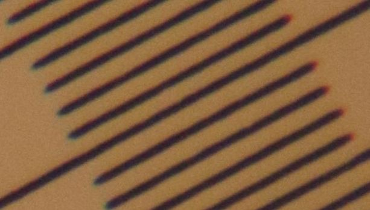
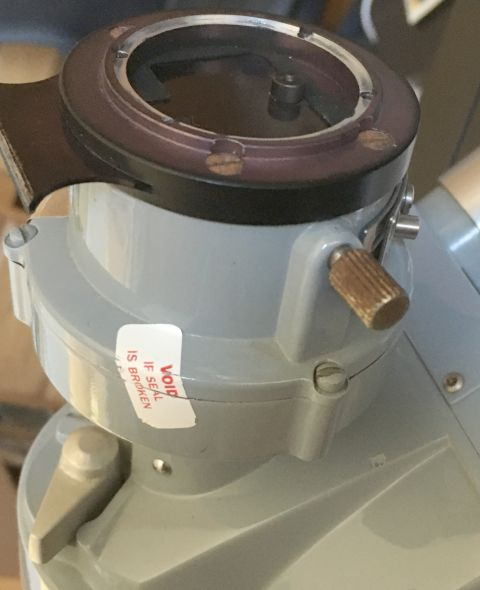

Photomicrography and macro photography are both popular subjects in the InterWeb,
including among better writers than I. Consequently, content here will focus (heh) on specific experiences,
rather than more general theory and technique,
for which see e.g. Allan Walls.
Years ago, I saw and admired Micrographia
and more recently Ray Parkhust's work
including contributions to vinylengine.com Stylus images on the not cheap (but not massively expensive).
While not aspiring to create aesthetically pleasing images,
facilitating capture of clear and useful phono stylus image wear images seems achievable.
Ray demonstrated that Nikon's long working distance CF objectives are well-suited to this,
while I already owned American Optical (AO) microscopes lacking color correction and long working distance objectives, oh well.
Initial stylus image capture employs a 10x epi microscope objective with darkfield illumination and Olympus NFK 3.3x projection ocular into a Canon DSLR.
To hold the stylus at ~45 degrees, the cartridge was mounted in a headshell
with no finger lift and clamped at the bayonet connector using a clothespin:
Although it facilitates sorting spacing between camera sensor and objectives, a bellows is not necessary;
extension tubes suffice, with more length yielding greater magnification.
The resulting image has decent resolution, but poor contrast.
This microscope has short working distance objectives;
the 20x objective would not clear this stylus' plastic grip at this angle.
90 degree shots will clear but require image stacking;
whether objective darkfield illumination will then
highlight stylus wear spots remains to be seen.
Using a camera with zoomed Live View eases focusing.
Beyond convenience, best focus with DSLR mirror down may differ from best focus on the sensor.
Silent shutter (Canon's mode 2) and remote shutter release minimize vibration during exposures.
Replacing halogen illumination with blue LEDs should improve image resolution,
since the Abbe diffraction limit depends on illumination wavelength and Numerical Aperture (NA).
Practically, blue LEDs not only have shorter wavelengths than do red and green
but excluding those longer wavelengths also usefully reduces chromatic artifacts from older and simpler lenses.
Canon DSLRs with Live View and silent shutter (e.g. 50D) can be had used for less than $100.
Even better, free Magic Lantern software adds
focus stacking for many such cameras.
Monocular microscope heads typically cost much less than trinoculars,
and used eyetube camera adapter clamps go for around $15.
Common brands were Kalt, Aetna and Telestar, but many identical or similar clamps were branded for cameras.
Eyetube adapters typically have T2 threads, requiring an additional camera-to-T2 adapter.
A projection ocular and extension tubes should cost less than $100;
the trick is obtaining a more or less complete microscope with epi illumination and bright/darkfield objectives.
Starting from scratch, I would look for Nikon 210mm B/D objectives...
To investigate contrast, Ray Parkhurst suggested
removing the camera and looking down into the tube.
Internal surfaces were not reflecting appreciable light,
but a small bright spot and dim blob are seen in the optic at the bottom of the eyetube.
Lacking ground glass, wax paper was laid over the camera adapter:
The dim blob is revealed as the projected stylus.
The bright spot appears less focused than when viewed directly and,
depending on viewing angle,
more or less distinct from the projected stylus image.
Removing the microscope head and looking down into the arm
reveals a bright spot centered in an epi illuminator lens
in a port off to one side
as well as a less bright spot on the lower lip of that port.
That very bright area below the epi lens is the brightfield mirror.
An A.O. #3002 image erector spaces the head further from the epi illuminator
and slightly improved contrast, despite adding magnifying optics in the path:
Microscopes better resolve by blue illumination, since shorter wavelength
and less opportunity for chromatic aberrations.
A 40mm RGB LED halo ring fits around microscope objectives and can be supported by a 20mm i.d. o-ring.
That o-ring below LED halo blocks some illumination...
Since Bayer-filtered camera sensors have relatively sparse blue pixels, aliasing is liable for images with less than 4x oversampling.
The dark wedge along the center of the above blue M55E stylus image is partly surface not in focus,
but also stylus angle not 45 degrees (twisted cantilever).
The next revision glued
a curled strip of business card as a half-cylinder to the halo backside...
...allowing an o-ring to secure LEDs on the objective from above:
Rotating the headshell in the clothespin to bring more of the stylus upper surface more nearly in focus and using green light instead of blue to involve more camera pixels yields the following:
Contrast could be improved by putting something flat black between the cantilever and its light plastic grip.
Microscope fine focus is indexed in microns, 200 per revolution.
Images of 0.01mm test slide (with cover slip) using MEIJI S.PLANM 20X
with Series 10 tube lens and Olympus PE 2.5X; no matching corrections.
red 144
green 153
white 148
blue 153
Red focus is out about 9 microns from blue and green..
finite focal length objective
A set of infinity objectives acquired years ago
also included a LEITZ WETZLAR 160/- EF 10/0.25
with 6.8 mm working distance (Laborlux K-D brochure page 14)
A recently acquired RMS to T2 adapter enables macrophotography experiments.
Having been attached using hot glue,
the RGB LED ring light mounting sleeve failed during an extended session;
illumination temporarily reverted to white LED gooseneck while epoxy cures.
Increased spacing between objective and focal plane
in theory impacts numerical aperture,
but trials with bellows did not indicate any drastic effects,
with results compromised by difficulty focusing.
Eliminating all optics but objective should have increased contrast,
but illumination differences and reduction in magnification confound comparison.
Here is a 1:1 crop of that stylus tip from an APS-C Canon sensor:
With camera body attached to a microscope, zoomed live view eases focusing,
but using objectives with bellows mostly demonstrated
limitations of conventional photography focus rails.
Resolution in this setup may also be constrained by sensor pixel density..
50.5mm dovetail to M42 adapter arrived from
RAF Camera.
This secures camera body and extender tubes to A.O. arm without head (and tube lens).
Finite objectives can then be used in A.O. arm with much better positioning and focus control than by bellows.
10X is not nearly enough to fill an APS-C sensor with stylus:
Making this image was much easier than with bellows,
except for positioning the LED to approximately match illumination:
Leitz color calibration on Series 10 with 7D
white
blue
green
red
74
65-8
72-5
67-70
Field of view: full frame 20X and 3.3X relay vs APS-C 10X
These are both 480*320 downsamples of full sensor images in the same microscope arm
with similar ring illumination:
Zooming the Leitz image
(right-click, "Open image in new tab", then [Ctrl]&[+] keys)
reveals that only about the center third is nearly focussed;
this objective wants to be used with a 3.3X relay lens..
Repurposing available bellows, EF and T2 extension tubes with adapters
yields nearly 140mm parfocal distance for Leitz objective to NFK 3.3X relay lens
and 150mm projection distance to APS-C sensor.
NFK 3.3X is perched at the T2-EF adapter:
This stack is decidedly less than rigid
and really needs electronic shutter and remote release.
Field of view is usefully improved: (downnsampled but uncropped)
blue 109
"white" 107
red 97
green 101
NFK 3.3X corrections designed for Olympus objectives cause
chromatic focus differences from Leitz 10X alone.
With 40mm RGB LED halo on Leitz objective,
M55E stylus is better illuminated.
Additional 3.3X magnification allows use of blue LED for better optical resolution
followed by about 4x downsampling after converting blue to grayscale and adjusting dynamic range:
The stylus in the above image was rotated less than 45 degrees from horizontal.
This image has the stylus rotated somewhat more than 45 degrees,
illuminated by white (R+G+B)LED halo, no contrast adjustment:
Finding the stylus with a microscope objective is easier using conventional oculars
than with camera Live View and projection ocular.
Since the head has an infinity tube lens, this requires infinity objectives.
Since Series 10 AO Spencers often include a 10X objective, how well does one work on a stylus?
Because they are smaller in diameter than MEIJI and Leitz objectives
for which cardstock half-cylinders were epoxied to LED halos, a shim was cut from clear vinyl tubing.
This particular objective appears to have about 4mm working distance.
With halo illumination, stylus tip is better illuminated with cartridge vertical centerline
rotated more nearly 60 than 45 degrees from horizontal, reducing stylus surface in focus.
With NFK 3.3X relay lens and about 200mm projection distance,
full field of view with APS-C sensor is usefully in focus;
both of these images (downsampled, but not cropped) were captured after central focusing (zoomed Live View):
After visually confirming that minimal detail is lost by downsampling original (5472x3648) images by 3x,
then, given optics are NOT matched for color correction,
compared whether blue (left) or green (right) illumination yields more detail:
Approximate IrfanView color corrections settings for recovering dynamic range after grayscale conversion
and before 3x downsampling: brightness ~25, contrast ~99, gamma ~1.65
Infinity objectives can be used with a camera lens focussed @ infinity,
in this case, a Reichert EPIStar 10x with Canon EF-S 55-250mm STM zoomed to 250mm.
To prevent this zoom from collapsing to 55mm, the camera body needs support.
Fortunately, focus is internal.
Some observations:
EPIStar darkfield illumination wants alignment
Kenko 1.4x TELEPLUS HD DGX reportedly works with this lens,
but Kenko TELEPLUS PRO 300does not.
About 50% more focal length is wanted to eliminate vignette:

monochromatic illumination
or fully corrected objective is wanted;
1:1 crop of focus near center:
PE 2.5 suspended with bellows and Canon 6D
over pasteboard tube to AO trinocular head
Leitz objective has working distance and nose profile for 45 degree illumination.
AO camera flange registers inside M42 camera adapter ring.

Calibration shot with Leitz EF and 3.3X photo relay to APS-C sensor:
Much of the camera sensor is wasted on out-of-focus objective.
Reducing blue images from 5472x3648 to 800x533
imperceptibly impacts detail:
...while green images noticeably lose detail below 1280x853:
relatively sparse blue pixels in Canon sensor's Bayer matrix
evidently matter more than light wavelengths at this lower magnification.
Introducing a (white) "helper" LED:
Rotating M55E stylus from 45 to 60 degrees improves illumination
...because of twisted stylus:
Pickering D400 stylus shows more typical 45 degree illumination:
RC Servo Tester wants 4.8-6.2VDC
provided by splicing it to a USB cable.
A short section of rubber host couples the servo to headshell connector.
The white card provides a reference for grayscale calibration of blue illuminination.
Servo allows interactively rotatiing the stylus to optimize microscope illumination angle.


 Increased spacing between objective and focal plane
Increased spacing between objective and focal plane
 50.5mm dovetail to M42 adapter arrived from
RAF Camera.
50.5mm dovetail to M42 adapter arrived from
RAF Camera.


{kind=link}